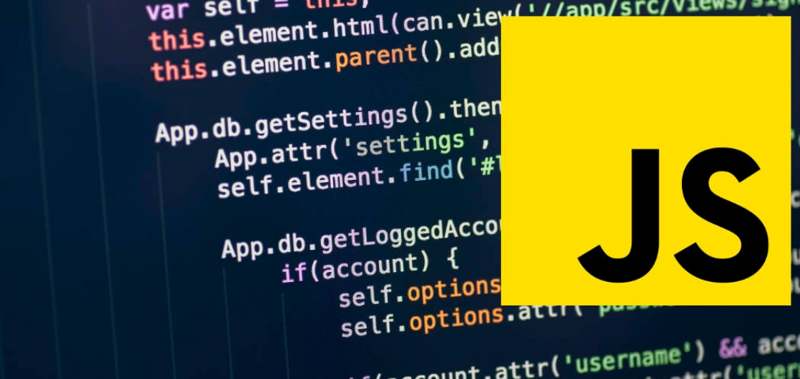

HTML
El Lenguaje de Marcado de Hipertexto (HTML) es el código que se utiliza para estructurar y desplegar una página web y sus contenidos. Por ejemplo, sus contenidos podrían ser párrafos, una lista con viñetas, o imágenes y tablas de datos. Como lo sugiere el título, este artículo te dará una comprensión básica de HTML y cúal es su función.
HTML no es un lenguaje de programación; es un lenguaje de marcado que define la estructura de tu contenido. HTML consiste en una serie de elementos que usarás para encerrar diferentes partes del contenido para que se vean o comporten de una determinada manera. Las etiquetas de encierre pueden hacer de una palabra o una imagen un hipervínculo a otro sitio, se pueden cambiar palabras a cursiva, agrandar o achicar la letra, etc.

Las partes principales del elemento son:
1. La etiqueta de apertura: consiste en el nombre del elemento (en este caso, p), encerrado por paréntesis angulares (< >) de apertura y cierre. Establece dónde comienza o empieza a tener efecto el elemento —en este caso, dónde es el comienzo del párrafo—.
2. La etiqueta de cierre: es igual que la etiqueta de apertura, excepto que incluye una barra de cierre (/) antes del nombre de la etiqueta. Establece dónde termina el elemento —en este caso dónde termina el párrafo—.
3. El contenido: este es el contenido del elemento, que en este caso es sólo texto.
4. El elemento: la etiqueta de apertura, más la etiqueta de cierre, más el contenido equivale al elemento.
CSS
Hojas de Estilo en Cascada (del inglés Cascading Style Sheets) o CSS es el lenguaje de estilos utilizado para describir la presentación de documentos HTML o XML (en-US) (incluyendo varios languages basados en XML como SVG, MathML o XHTML). CSS describe como debe ser renderizado el elemento estructurado en la pantalla, en papel, en el habla o en otros medios.
CSS es uno de los lenguajes base de la Open Web y posee una especificación estandarizada por parte del W3C. Anteriormente , el desarrollo de varias partes de las especificaciones de CSS era realizado de manera sincrónica, lo que permiía el versionado de las recomendaciones. Probablemente habrás escuchado acerca de CSS1, CSS2.1, CSS3. Sin embargo, CSS4 nunca se ha lanzado como una versión oficial.

La estructura completa es llamada regla predeterminada (pero a menudo «regla» para abreviar). Nota también los nombres de las partes individuales:
Selector
El elemento HTML en el que comienza la regla. Esta selecciona el(los) elemento(s) a dar estilo (en este caso, los elementos p ). Para dar estilo a un elemento diferente, solo cambia el selector.
Declaración
Una sola regla como color: red; especifica a cuál de las propiedades del elemento quieres dar estilo.
Propiedades
Maneras en las cuales puedes dar estilo a un elemento HTML. (En este caso, color es una propiedad del elemento p ). En CSS, seleccionas qué propiedad quieres afectar en tu regla.
Valor de la propiedad
A la derecha de la propiedad, después de los dos puntos (:), tienes el valor de la propiedad, para elegir una de las muchas posibles apariencias para una propiedad determinada (hay muchos valores para color además de red).
Nota las otras partes importantes de la sintaxis:
Cada una de las reglas (aparte del selector) deben estar encapsuladas entre llaves ({}).
Dentro de cada declaración, debes usar los dos puntos (:) para separar la propiedad de su valor.
Dentro de cada regla, debes usar el punto y coma (;) para separar una declaración de la siguiente.
JAVASCRIPT
JavaScript es el lenguaje de programación encargado de dotar de mayor interactividad y dinamismo a las páginas web. Cuando JavaScript se ejecuta en el navegador, no necesita de un compilador. El navegador lee directamente el código, sin necesidad de terceros. Por tanto, se le reconoce como uno de los tres lenguajes nativos de la web junto a HTML (contenido y su estructura) y a CSS (diseño del contenido y su estructura).
No conviene confundir JavaScript con Java, que es un lenguaje de programación muy diferente. La confusión proviene del nombre, registrado por la misma empresa creadora de Java (Sun Microsystems). JavaScript (JS) se creó posteriormente, y la empresa norteamericana lo que hizo simplemente fue cambiar el nombre que le habían puesto sus creadores al comprar el proyecto (LiveScript). El lenguaje de programación Java está orientado a muchas más cosas que la web desde sus inicios.

Existe una tecnología llamada AJAX que permite intercambiar información con el servidor sin tener que recargar la página. Es decir, sólo cargamos de la página lo necesario. Esta tecnología desarrollada en JavaScript ha supuesto uno de los principales avances en el desarrollo web. Aunque no la sepamos reconocer, es la encargada de que podamos conseguir más mensajes, tweets, emails…sólo pulsando un botón, sin tener que recargar la página.